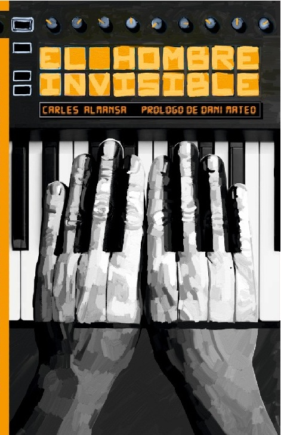

EL HOMBRE
INVISIBLE
Esta no es una historia de éxito. Tampoco es una historia de fracaso. Es la historia de alguien que nunca dejó de hacer música.

Una vida detrás de las canciones.
Durante años viví convencido de que la música acabaría llevándome a algún sitio. Y, de alguna manera, lo hizo.
Me llevó a escenarios, camerinos y locales de ensayo. A noches que empezaban con un concierto y terminaban cuando ya era de día. A fiestas, excesos, amistades, viajes y alguna mala decisión.
Conocí gente increíble y formé bandas que parecían capaces de comerse el mundo. Viví conciertos inolvidables y otros que habría pagado por olvidar.
Crecí, me equivoqué, volví a empezar y seguí haciendo canciones. Siempre con la sensación de que lo importante aún estaba por llegar.
Carles Almansa
Carles Almansa lleva componiendo canciones desde que tiene memoria. Como no consiguió que su música llegara a todo el mundo, ha decidido escribir El hombre invisible para que, al menos, alguien pueda ignorarlo en otro formato.
La música sigue formando parte de su vida. También puedes conocer su proyecto musical, Cosmic Marciana ↗.
Consigue tu ejemplar.
El hombre invisible es una historia de música, sueños, conciertos, amistades y unas cuantas decisiones equivocadas. Un recorrido por todo aquello que vivimos mientras creemos que lo mejor todavía está por llegar.
COMPRAR EL LIBROContacto
¿Quieres preguntarme algo sobre el libro, hacerme una propuesta o simplemente saludar?
ESCRÍBEME POR CORREOO escríbeme directamente a almansacarles@gmail.com